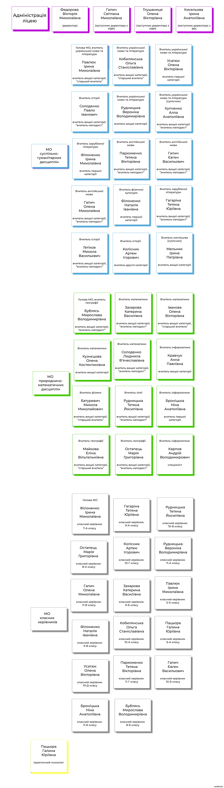

Педагогічний склад 2025–2026
На сторінці зібрано актуальну структуру педагогічного колективу: адміністрацію, методичні обʼєднання, класних керівників і психологічну службу. Нижче подано розгорнуту схему педагогічного складу, а також зручні картки для швидкого перегляду.
Адміністрація
Федорова Вікторія Миколаївнадиректор
Ганич Світлана Миколаївназаступник директора з НВР
Глушаниця Олена Вікторівназаступник директора з НВР
Кисельова Ірина Анатоліївназаступник директора з ВР
МО суспільно-гуманітарних дисциплін
Павлюк Ірина Миколаївнавчитель української мови та літератури
Кобилянська Ольга Станіславівнавчитель української мови та літератури
Усатюк Олена Вікторівнавчитель української мови та літератури
Солоденко Павло Івановичвчитель історії
Рудницька Вероніка Володимирівнавчитель української мови та літератури
Кунченко Алла Анатоліївнавчитель української мови та літератури (сумісник)
Філоненко Ірина Миколаївнавчитель зарубіжної літератури
Пархоменко Тетяна Вікторівнавчитель англійської мови
Ганич Євген Васильовичвчитель англійської мови
Ганич Олена Миколаївнавчитель англійської мови
Філоненко Наталія Іванівнавчитель фізичної культури
Гагаріна Тетяна Юріївнавчитель зарубіжної літератури
Гетіков Микола Васильовичвчитель історії
Колісник Артем Ігоровичвчитель історії
Мельник Ірина Петрівнавчитель мистецтва (сумісник)
МО природничо-математичних дисциплін
Бублась Мирослава Володимирівнавчитель географії
Захарова Катерина Василівнавчитель математики
Іванова Олена Вікторівнавчитель математики
Кузнецова Олена Костянтинівнавчитель математики
Солоденко Людмила Вʼячеславівнавчитель математики
Кравчук Анна Павлівнавчитель інформатики
Батуревич Микола Миколайовичвчитель фізики
Рудницька Тетяна Йосипівнавчитель хімії
Броніцька Ніна Анатоліївнавчитель інформатики
Майкова Еліна Вільгельмівнавчитель географії
Останець Марія Григорівнавчитель географії
Карпов Андрій Володимировичспеціаліст / інформатика
МО класних керівників
Філоненко Ірина Миколаївнакласний керівник 7-А класу
Гагаріна Тетяна Юріївнакласний керівник 9-А класу
Рудницька Тетяна Йосипівнакласний керівник 10-В класу
Останець Марія Григорівнакласний керівник 8-А класу
Колісник Артем Ігоровичкласний керівник 10-Г класу
Рудницька Вероніка Володимирівнакласний керівник 11-А класу
Ганич Олена Миколаївнакласний керівник 11-В класу
Захарова Катерина Василівнакласний керівник 9-Б класу
Павлюк Ірина Миколаївнакласний керівник 5-А класу
Філоненко Наталія Іванівнакласний керівник 9-В класу
Кобилянська Ольга Станіславівнакласний керівник 10-А класу
Пащора Галина Юріївнакласний керівник 6-А класу
Усатюк Олена Вікторівнакласний керівник 10-Д класу
Пархоменко Тетяна Вікторівнакласний керівник 11-Г класу
Ганич Євген Васильовичкласний керівник 10-Б класу
Броніцька Ніна Анатоліївнакласний керівник 11-Б класу
Бублась Мирослава Володимирівнакласний керівник 8-Б класу
Пащора Галина Юріївнапрактичний психолог
Офіційна схема педагогічного складу
